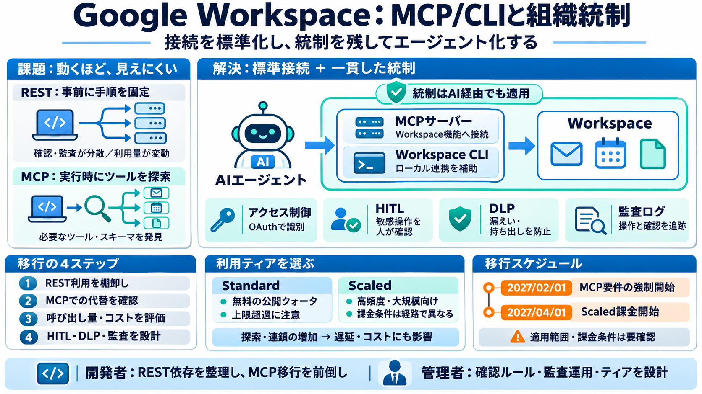

Usage tiers and quotas for Google Workspace APIs and MCP servers | Google for Developers
| Billing & quota enforcement | April 1, 2027 | Google Workspace begins enforcing standard usage limits across all Cloud…

AIエージェントがGoogle Workspaceを扱う際、MCPサーバーとWorkspace CLIで接続を標準化しつつ、HITL・DLP・監査ログ・利用ティアで組織統制を強化します。
REST API直叩き中心だと、実行時にどのツール・データが連鎖するかが複雑になり、統制（確認・DLP・監査）が後追いになりがちです。
REST APIは“その場の呼び出し”に強く、MCP（Model Context Protocol）は“実行時に必要なツールやスキーマを見つける”ために設計されています。
GoogleはWorkspace MCP servers（一般提供GA）とWorkspace CLIを用意し、エージェントがWorkspaceツールを安全かつ効率よく呼べる道を揃えます。
MCP/CLIへの移行は“接続方式の変更”です。実装がREST中心の場合は設計変更になり得ます。
“いつ何を”置き換えるかを先に決めると、期限後の詰まりを減らせます。
外部エージェントにはOAuth等で自己識別させ、Adminコンソールでアクセス制御。さらにHITL・DLP・監査ログがAI経由でも機能します。
既存のユーザー向けDLPルールがAIエージェント使用時にも適用され、監査ログにもエージェントの行動や確認が記録される想定です。
Standardは無料の公開クォータ（レート制限）で開始し、超過時はScaledで拡張することで大規模・高頻度利用の安定性を確保します。
MCP要件とScaled課金は段階導入です。期限に間に合わないと技術的な適合が難しくなります。
MCP/CLIで接続をエージェント向けに標準化し、HITL・DLP・監査ログで統制を制度化。開発者は移行、管理者は運用設計とティア判断を進めるべきです。
課金条件や要件の細部は公式ドキュメントで最終確認してください（無料枠の有無・課金開始条件などが経路で異なり得ます）。
| Billing & quota enforcement | April 1, 2027 | Google Workspace begins enforcing standard usage limits across all Cloud…
The second date is April 1, 2027, when billing starts for the new Scaled Tier. Scaled projects will pay $0.10 to $0.50 p…
Usage limits and billing: Starting April 1, 2027, Scaled tier billing begins for the Gmail, Google Calendar, and Google …
+ MCP servers have no daily no-charge allowance on the Scaled Tier. Switching from the Standard Tier to the Scaled Tier …
- Entrepreneurship: USAGE TIERS & KEY DEADLINES. • STANDARD TIER: Free tier covering over 99% of active developers, with…